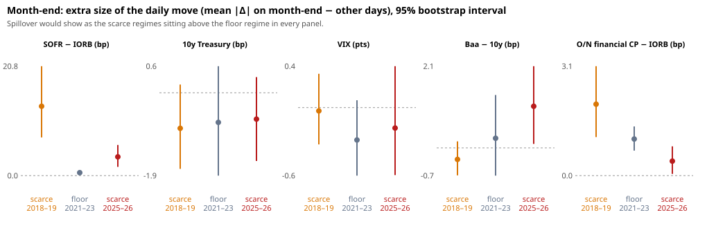

Event study 01: result
Exploratory. Design: docs/design-event-study-01.md, written before the first run, with two amendments made after it (listed there). Every figure below is read from result.json.
Inputs:
- the repo-market-model panel at commit
40fcc35, SHA-2564ddc3882…a8999, 3 Apr 2018 – 3 Sep 2026; - FRED, retrieved 26 Oct 2026 (
metadata/fred_manifest.json); - 5,000 bootstrap draws, seed 20261026.
In one line
Repo pressure on calendar days did not move Treasury yields, VIX, corporate credit, equities or the dollar more in the scarce-reserve regimes than on the floor, at daily closes, in public data. Where it does show up is the nearest ring of money markets, and there only weakly: bills and overnight unsecured CP.
The repo shock is real (first stage)
The calendar delivers the dose the design relies on. Month-end change in SOFR − IORB, the event day minus other days, as a difference from the floor regime:
| Regime vs floor 2021–23 | Month-end Δspread, extra (bp) | 95% interval |
|---|---|---|
| scarce 2018–19 | +15.2 | [9.2, 22.5] |
| scarce 2025–26 | +5.0 | [3.0, 7.3] |
The main test: is the market move larger when repo is scarce?
Difference in differences of the month-end size effect (mean |daily change| on month-end − other days), scarce minus floor:
| Outcome | 2025–26 − floor | 2018–19 − floor (replication) |
|---|---|---|
| 10-year Treasury yield (bp) | +0.07 [−1.55, 1.63] | −0.14 [−1.70, 1.42] |
| VIX (points) | +0.11 [−0.48, 0.76] | +0.26 [−0.20, 0.72] |
| Baa − 10-year (bp) | +0.81 [−0.62, 2.19] | −0.54 [−1.74, 0.52] |
| Overnight financial CP − IORB (bp) | −0.64 [−1.15, −0.10] | +1.00 [−0.02, 2.15] |
None of the four shows a larger move in both scarce regimes. The one interval that excludes zero, CP in 2025–26, has the wrong sign, and the replication points the other way.

Secondary readings (not tests)
- Multiplicity. Across all market outcomes, events and regime contrasts, 8 of 144 difference-in-differences intervals exclude zero, against about 7 expected by chance. At the regime level, 33 of 252 exclude zero, against about 13. Most of these say calendar days are quieter than other days in every regime, which is likely because macro data releases fall on the baseline days. The difference in differences is built to net that out.
- Overnight CP, signed. On the floor, CP − IORB fell about 0.9 bp at month-end. In both scarce regimes it did not, so the signed difference in differences is +1.0 bp [0.3, 1.6] in 2025–26 and +1.1 bp [−0.5, 2.6] in 2018–19. This is consistent with month-end window dressing pulling unsecured rates down only when cash is plentiful. It is about 1 bp, post hoc, and one of many comparisons.
- Pass-through slopes (daily market change per 1 bp daily spread change, all non-excluded days):
- The 4-week bill − IORB moves with repo only in 2025–26: 0.14 [0.07, 0.23], against 0.01 in 2018–19 and −0.05 on the floor. Bills and repo share drivers (bill supply, TGA swings), so this is co-movement, not proof of causation.
- Overnight CP moved with repo in 2018–19 (0.06 [0.01, 0.10]), not in 2025–26.
- S&P 500 in 2025–26: +0.03% per bp [0.001, 0.058]. It is positive, borderline, and one of 32 slopes; read it as chance until it replicates.
- Credit spreads in 2025–26 alone (no floor comparison exists on FRED): on month-ends, IG OAS rose 0.8 bp more than on other days [0.05, 1.5] and HY 2.4 bp [−1.1, 6.0]. With no floor regime to difference against, this can't be told apart from a month-end pattern in index spreads.
What this does and does not say about "impacting markets as a whole"
- It says: the calendar-driven repo pressure that came back in 2025–26 does not yet leave a detectable mark on daily closes of broad markets. If repo is moving wider markets, it is not through these predictable days, at this resolution, at a size that 20 month-ends can detect. A move of up to about 1.6 bp in the 10-year or 0.75 VIX points per month-end would still fit inside these intervals.
- It does not rule out:
- Effects inside the day, which daily closes miss.
- Unscheduled stress. This study looks at calendar days by design, but every post-2020 episode on the one-pager began within a day of a calendar date, and the tail days are too few to study separately.
- Markets FRED does not carry. The links most likely to show it are swap spreads, the Treasury cash–futures basis (where leveraged funds finance in repo), the MOVE index and cross-currency basis.
- What our data does show is that exposure has grown. Dealer Treasury positions rose from about $131bn (2022 average) to about $496bn (2026), and SOFR volume from about $1.0tn to $3.1tn a day, while the spread climbed toward zero. A repo shock now sits under far more leveraged Treasury positions than in 2018–19. That is the channel worth measuring next.
Next, if wanted
- Add the funding-sensitive markets: SOFR swap spreads, Treasury futures basis (CFTC leveraged-fund positioning is public, weekly), MOVE, and the EUR/USD and USD/JPY cross-currency basis. These need a source other than FRED.
- Study the non-calendar tail (spread jumps ≥ 5 bp with no calendar cause), with a placebo on matched dates.
- Test whether month-end effects on markets scale with the size of that month's repo shock, not just its regime, within 2025–26.
Source on GitHub, with its design, code and data.